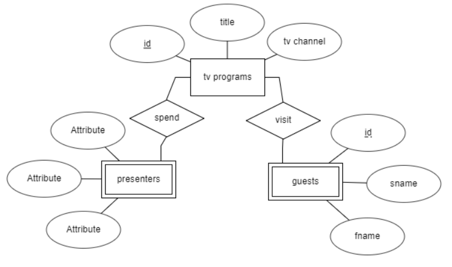

<h3>Варіант-9. Предметна область - "Програми передач для телебачення"</h3><br>
<br>
Як можна побачити, усі сутності з опису ПО були перенесені до Інфологічної моделі та з'єднані відповідними типами з'єднань. 